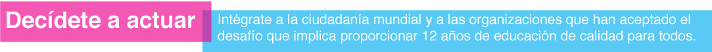
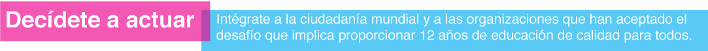

Map 1: Compulsory Education
Number of years or age span during which children are legally obliged to attend school. In principle compulsory education is also free. In many countries the duration of free education exceed that of compulsory education.
Source: UNESCO Institute for Statistics (UIS)
Map 2: Out-of-School Children
Percentage of out-of-school children of primary school age
Percentage of out-of-school adolescents of lower secondary school age
Number of out-of-school children of primary school age
Number of out-of-school adolescents of lower secondary school age
Out-of-school indicators refer to children, typically 6 to 11 years old, and young adolescents, typically 12 to 15 years old, who are not enrolled in primary or lower secondary education.
Source: UNESCO Institute for Statistics (UIS)
Map 3: Aid to Basic Education
Total aid to basic education as disbursements in current USD
Basic education, as defined by OECD-DAC, covers primary education, basic life skills for youth and adults, and early childhood education.'Level unspecified' refers to any activity that cannot be attributed solely to the development of a particular level of education, such as teacher training. General education programme support is often reported in this subcategory.
Total aid to basic education as disbursements in current USD
A disbursement is a record of an actual international transfer of financial goods and services.
In the OECD-DAC database current prices are expressed in USD.
Methodology:
Formula used to calculate total aid to basic education: Direct aid to basic edcucation plus 10% of general budget support, plus 50% of education 'level unspecified'. Data on mulitlateral aid to basic education is only available for recipient countries. Disbursements reflect the average amount sent or received by a country in the 2012 to 2013 period (latest data).
Source: OECD-DAC Creditor Reporting System (2015):
For more information: http://www.oecd.org/dac/stats/crsguide.htm
The boundary names and designations shown do not imply official endorsement or acceptance by UNESCO.
All requests for commercial use and translation rights should be submitted to: uis.publications@unesco.org
Image courtesy of: Ami Vitale/World Bank/2002


 
